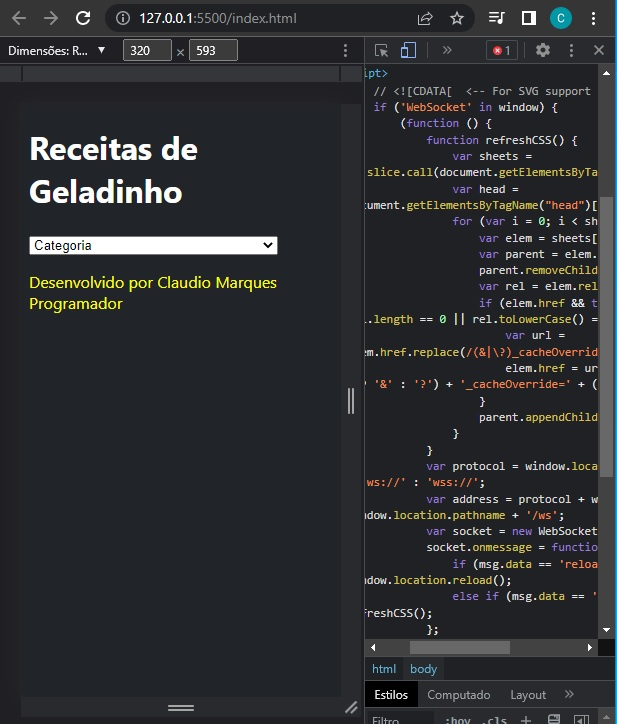

Olá, empreendedor!
Olá, meu nome é Claudio Marques. Sou programador e entusiasta de geladinho. Estou montando minha pequena fábrica e para alavancar estou disponibilizando meu material de estudo e cursos, são as receitas mais famosas da internet e um curso feito pelo dono do melhor carrinho de geladinho gourmet de São Paulo. O investimento é de R$ 200,00 e você recebe uma senha para acesso ao site. Diferente de cursos e ebooks vendidos, é um material atualizado diariamente, de receitas gourmet à base água, incluindo as melhores base em pó. Geladinho Gourmet já tem 81 receitas que o preço de venda vai de R$ 6,00 á R$ 10,00. Mais Informações no meu LinkedIn ou Instagram.
Como é o site?
Esta é uma imagem da criação dele.
Nele há um menu como este, para você escolher qual categoria quer. No momento tem essas categorias: Gourmet Profissional, Gourmet Profissional Base Água e Gourmet Profissional Pó para Sorvete.
E escolhendo a categoria aparece o conteúdo. O conteúdo está sendo colocado nas minhas horas vagas, e vai ser colocado outros tipos de receitas, tabelas e calculadoras... material ideal para quando for fazer compras saber exatamente o que comprar e ser um aliado no dia a dia. Gostou? Está com dúvidas? Entre em contato nos links no topo da tela.